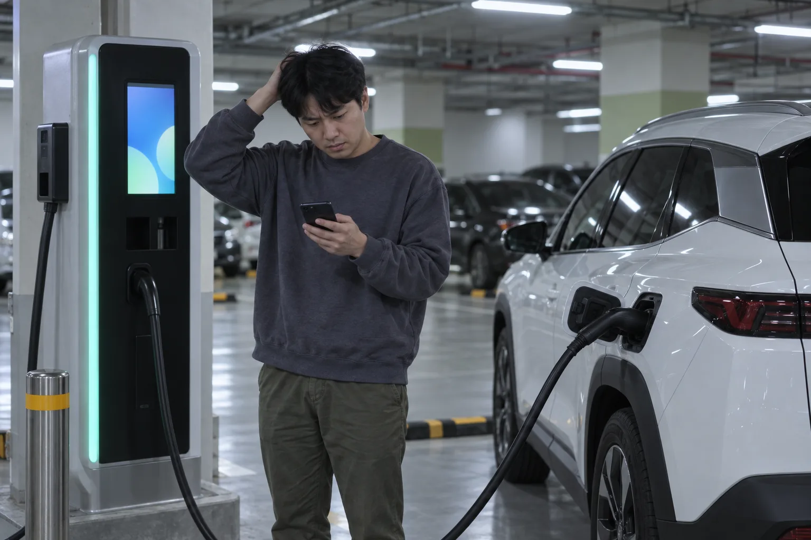
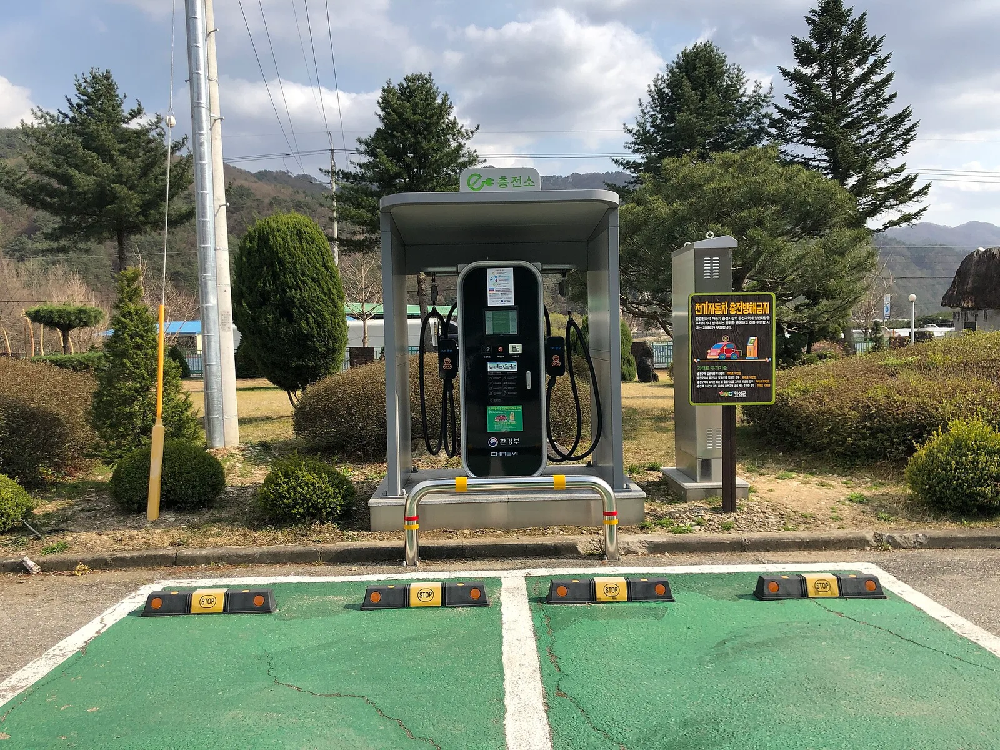
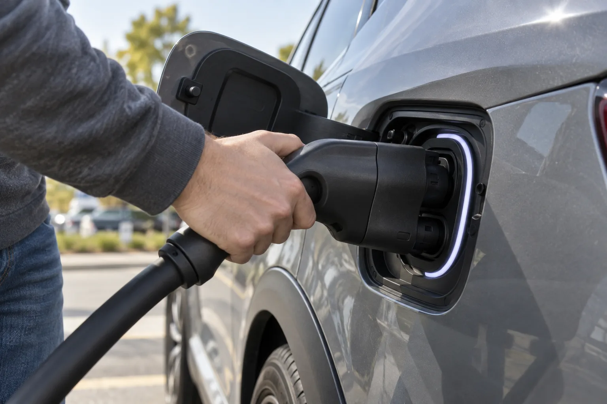
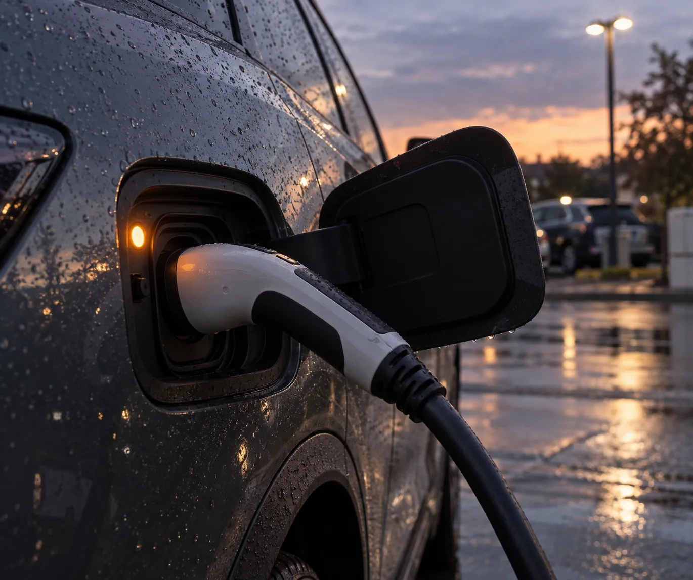
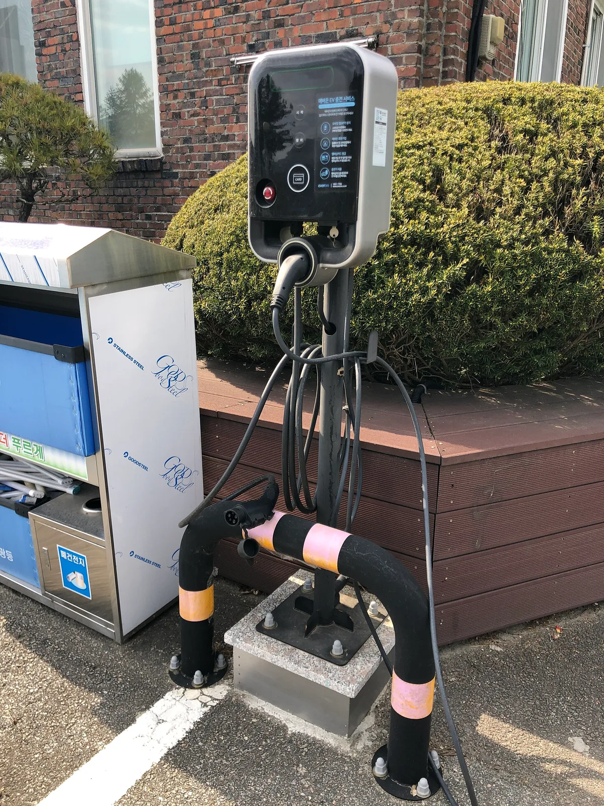
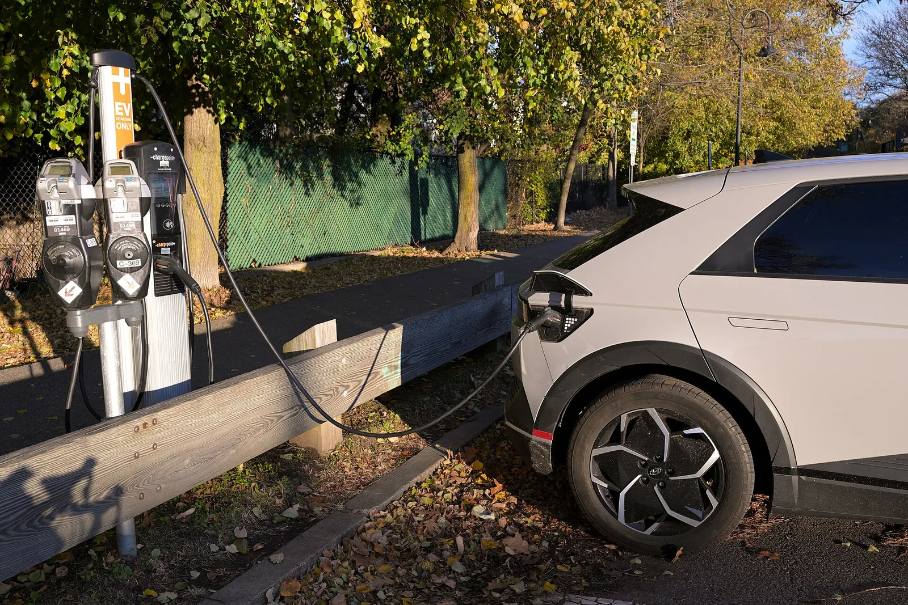
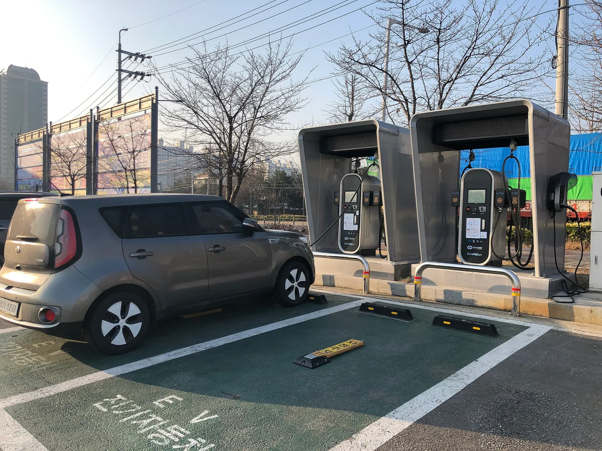

▲ 지하주차장 급속충전기 앞에서 충전이 시작되지 않아 휴대폰 앱을 확인하는 운전자 이미지=AI 생성
충전기에 커넥터를 꽂았는데 충전이 시작되지 않거나, 잘 되던 충전이 중간에 뚝 끊겼다면 먼저 "누구 탓인지"부터 가려야 한다. 충전기 쪽 문제면 옆 충전기로 옮기면 끝나고, 차 쪽 문제면 어느 충전기에 꽂아도 똑같다. 기아 취급설명서가 안내하는 순서도 이 원리를 따른다. 차량 충전 설정을 확인하고, 충전기 상태를 보고, 정상 작동하는 다른 충전기에 꽂아 본다. 거기서 충전되면 충전기 업체에, 여전히 안 되면 서비스센터에 연락하라는 것이다. 충전 요금이나 배터리 관리 이야기는 빼고, 현장에서 바로 따라 할 수 있는 것만 정리했다.
1. 지금 바로 해볼 것: 급속·완속별 순서
대부분의 "충전 안 됨"은 체결·인증·설정 셋 중 하나에서 걸린다. 기아 취급설명서는 충전이 되지 않는 상황으로 차량 쪽에서는 변속 위치가 P(주차)가 아닐 때, 차량 내부 충전 시스템 이상, 배터리 온도가 지나치게 높을 때를, 충전기 쪽에서는 충전기 온도가 지나치게 높거나 낮을 때, 전압 이상, 케이블이 올바르게 연결되지 않았을 때를 꼽는다. 현대차 아이오닉 6(2025년형) 취급설명서의 '충전이 시작되지 않는 경우' 항목도 예약충전 설정, 충전기 작동 상태, 클러스터 경고문, 커넥터 잠김 여부를 차례로 확인한 뒤 정상 작동하는 다른 충전기로 시도해 보라고 안내한다. 아래 순서는 이 목록을 현장에서 확인하기 쉬운 것부터 배열한 것이다.
급속충전기(DC)에서 안 될 때
- 충전기 화면을 먼저 본다. '인증 대기', '커넥터 연결 확인', '통신 중' 같은 단계에서 멈춰 있는지 확인하면 어디서 막혔는지 절반은 알 수 있다.
- 커넥터를 뺐다가 다시 끝까지 꽂는다. 급속 커넥터는 무겁고 케이블이 뻣뻣해 비스듬히 걸리기 쉽다. 손잡이를 잡고 충전구와 일직선으로 밀어 넣은 뒤, 케이블 무게에 커넥터가 처지지 않게 둔다.
- 인증을 다시 한다. 회원카드는 태그 후 화면이 넘어갈 때까지 대고 있고, 앱은 충전기 QR·번호가 맞는지 확인한다. 카드 한 장이 계속 안 되면 다른 수단(앱·신용카드)으로 바꿔 본다.
- 변속 레버가 P인지, 계기판에 충전 관련 경고가 떴는지 확인한다. 경고문이 있으면 그 문구가 가장 직접적인 단서다.
- 배터리가 거의 가득 차 있지 않은지 본다. 기아는 완전히 충전된 상태에서 급속충전을 시도하면 일부 업체 충전기에서 차량과의 통신 오류로 오류 메시지가 표시될 수 있다고 안내한다.
- 옆 충전기(가능하면 다른 운영사 제품)로 옮겨 꽂아 본다. 여기서 되면 앞 충전기 고장이다.

▲ 강원 횡성군 강림면행정복지센터에 설치된 공공 급속충전기. 충전기 본체에 운영사와 고객센터 안내가 붙어 있는 경우가 많다 ⓒ Choi Kwang-mo / Wikimedia Commons (CC0)
완속충전기(AC)·휴대용 충전기에서 안 될 때
- 예약충전부터 확인한다. 기아 취급설명서는 "예약 충전이 설정되어 있는 경우 완속 충전기 및 휴대용 충전기를 연결해도 즉시 충전이 되지 않습니다"라고 명시한다. 예약충전은 완속·휴대용 충전에서만 작동하므로, 급속은 되는데 완속만 안 된다면 가장 먼저 의심할 항목이다.
- 인포테인먼트 화면이나 제조사 앱에서 예약충전을 해제한다. 기아 일부 차종은 충전구 옆 즉시 충전 스위치를 약 2초간 누르면 예약을 풀고 바로 충전을 시작한다.
- 충전기 본체의 전원·상태 표시등을 본다. 표시등이 아예 꺼져 있거나 오류 색이면 충전기 전원·고장 문제다. 표시 방식은 충전기 제조사마다 다르다.
- 휴대용 충전기라면 콘센트와 전류 설정을 확인한다. 기아는 연장 코드·어댑터를 쓰지 말고 순정 휴대용 충전 케이블만 쓰라고 안내한다.
- 다른 완속충전기에서도 안 되는데 급속은 된다면 차량의 교류(AC) 충전 경로, 즉 온보드 충전기(OBC) 쪽 문제일 수 있다. 이때는 서비스센터 점검이 필요하다.

▲ 커넥터 손잡이를 잡고 충전구와 일직선으로 끝까지 밀어 넣는 모습. 비스듬히 걸리면 충전이 시작되지 않거나 전류가 줄 수 있다 이미지=AI 생성
2. 충전기 탓일까, 차 탓일까: 원인 구분표
가장 확실한 구분법은 '다른 충전기 교차 확인'이다. 그 전에 증상만으로도 상당 부분 추릴 수 있다. 아래 표는 기아·테슬라 매뉴얼에 나온 증상과 조치를 기준으로 정리했다.
| 원인 | 누구 탓 | 이런 증상이면 의심 | 할 일 |
|---|---|---|---|
| 인증·결제 실패 | 충전기·결제 수단 | 커넥터는 꽂혔는데 화면이 인증 단계에서 넘어가지 않음. 카드 태그 후 반응 없음 | 카드 재태그, 앱·신용카드 등 다른 수단으로 재시도. 계속 실패하면 운영사 고객센터 |
| 커넥터 체결 불량 | 사용 방법(드물게 커넥터 손상) | 화면에 '커넥터 연결 확인', 테슬라는 충전 포트 표시등 황색(황색 점멸은 감소된 전류로 충전 중) | 뺐다가 정렬해 끝까지 재삽입. 충전구·커넥터에 이물질이 있는지 확인 |
| 예약충전 설정 | 차(설정) | 완속·휴대용에서만 충전이 안 됨. 기아는 충전 표시등 주황색 상시, 테슬라는 청색 상시 | 인포테인먼트·앱에서 예약 해제 또는 즉시 충전 실행 |
| 충전 상한 도달 | 차(설정) | 꽂자마자 끝나거나 금방 종료. 기아는 목표 충전량 도달 시 표시등 초록색 상시 | 차량의 목표 충전량(충전 한도) 설정을 확인·조정. 이미 가득 찼다면 정상 |
| 충전 중 멈춤(온도·출력 제한) | 차 또는 충전기(대개 보호 동작) | 한여름·한겨울, 연속 급속충전 뒤 속도가 크게 떨어지거나 끊김 | 잠시 뒤 재시도. 충전기 과열이면 다른 충전기로. 배터리 온도가 원인이면 반복 시 점검 |
| 충전기 고장 | 충전기 | 화면 꺼짐·오류 코드. 다른 충전기에서는 정상 충전 | 다른 충전기 이용, 운영사·무공해차 통합누리집에 고장 신고 |
| 차량 충전구·온보드 충전기(OBC) 이상 | 차 | 어느 충전기에서도 안 됨. 완속만 계속 안 되고 급속은 됨. 계기판 충전 경고, 기아는 표시등 빨간색 깜빡임(차량 혹은 충전기 문제) | 충전구 손상·부식 여부 확인 후 직영 서비스센터·협력사 점검 |

▲ 완속 커넥터가 꽂힌 충전구의 주황색 표시등. 표시등 색은 충전 상태를 알려주는 가장 빠른 단서다 이미지=AI 생성
📍 충전구 표시등 색, 이렇게 읽는다
기아(2026년형 전기차 취급설명서 기준): 하늘색 상시=대기, 하늘색 깜빡임=차와 충전기가 통신 중, 초록색 깜빡임=충전 중(충전량이 높아질수록 느리게 깜빡임), 초록색 상시=목표 충전량 도달, 주황색 상시=예약충전 설정, 빨간색 깜빡임=차량 혹은 충전기 문제로 충전 불가.
테슬라(서비스 안내 기준): 청색 점멸=충전기와 통신 중, 청색 상시=예약 충전 대기, 녹색 점멸=충전 중, 황색 상시=커넥터가 완전히 연결되지 않음, 황색 점멸=연결 불완전으로 감소된 전류로 충전 중, 적색=오류로 충전 중지. 적색이면 계기판·터치스크린의 장애 메시지를 확인하고, 다른 충전 케이블로도 안 되면 차량 전원을 껐다 켠 뒤 다시 시도하라고 안내한다.
현대 아이오닉 5(2024년형 취급설명서 기준): 충전 도어 안쪽 표시등은 충전량을 0~24%, 25~49%, 50~74%, 75~100%의 4단계로, 전면 범퍼 중앙 표시등은 20% 단위 5단계로 보여준다. 충전 상태 대신 충전량을 보여주는 방식이라 오류 여부는 클러스터 경고문으로 확인해야 한다.
차종마다 색 체계가 다르므로 정확한 의미는 내 차 취급설명서의 '충전 상태 표시등' 항목에서 확인하자.

▲ 공공기관 주차장의 스탠드형 완속충전기. 완속에서만 충전이 안 된다면 차량의 예약충전 설정부터 확인하자 ⓒ Choi Kwang-mo / Wikimedia Commons (CC0)
3. 커넥터가 안 빠질 때: 문 잠금부터 풀자
충전이 끝났는데 커넥터가 꿈쩍하지 않는다면 대부분 차량의 '충전 커넥터 잠금' 때문이다. 케이블 도난을 막기 위해 차가 커넥터를 물고 있는 것이다. 기아 취급설명서는 차량 도어가 잠긴 상태에서는 충전 커넥터의 잠금 해제 버튼이 작동하지 않는다고 적고 있다.
- 스마트키나 앱으로 차 문 잠금을 해제한다. 기아의 '상시 잠금' 모드에서는 충전 중 도어 잠금을 해제해 커넥터 잠금이 풀려도 15초 안에 분리하지 않으면 자동으로 다시 잠긴다. 잠금 해제 직후 바로 뽑자. 현대 아이오닉 5 취급설명서도 같은 15초 재잠금 방식을 안내한다.
- 충전기 화면이나 앱에서 '충전 종료'를 먼저 누른다. 기아는 급속충전이 완료됐거나 충전기에서 충전을 멈춘 뒤 커넥터를 분리하라고 안내한다. 급속충전은 잠금 모드와 관계없이 충전 중에는 항상 잠긴다.
- 커넥터 손잡이의 해제 버튼을 누른 채 당긴다. 테슬라는 커넥터 핸들 버튼, 터치스크린·앱의 충전 화면, 리모트키의 후면 트렁크 버튼을 1~2초 길게 누르는 방법으로 래치를 풀 수 있다고 안내한다.
- 그래도 안 되면 제조사가 정한 비상 해제 장치를 쓴다(아래 박스). 이때도 충전이 완전히 멈췄는지 먼저 확인한다.
📍 제조사 매뉴얼에 있는 비상 해제 방법
기아(2026년형 전기차 취급설명서): 배터리 방전이나 전기 배선 이상으로 커넥터가 분리되지 않으면 모터룸 안의 비상용 고리(비상 해제 케이블)를 가볍게 당겨 충전 인렛 잠금을 푼 뒤, 커넥터 잠금 해제 버튼을 누르고 분리한다. 그래도 버튼이 계속 작동하지 않으면 직영 서비스센터나 서비스협력사 점검을 받으라고 안내한다.
현대 아이오닉 5(2024년형 취급설명서): 같은 상황에서 테일게이트 안쪽에 있는 비상용 고리를 가볍게 당기면 충전 인렛 잠금이 풀린다. 충전구가 차체 뒤쪽에 있는 차라 고리도 모터룸이 아닌 트렁크 쪽에 있다. 같은 그룹 차라도 위치가 다르다는 뜻이다.
테슬라(모델 S 서비스 안내): 일반적인 방법이 모두 안 될 때만 충전 중이 아닌지 확인하고, 후면 트렁크를 열어 충전 포트 해제 케이블을 아래로 당긴 다음 충전 케이블을 뽑는다. 해제 케이블을 당기면서 동시에 커넥터를 뽑으려 하지 말고, 충전 중이거나 주황색 고전압 도선이 노출된 상태에서는 하지 말라고 경고한다. 반복 사용하면 해제 케이블이나 충전 장비가 손상될 수 있다.
비상 해제 장치의 위치는 차종·연식마다 다르다. 매뉴얼에서 위치를 확인할 수 없거나 안전하게 할 자신이 없다면 제조사 고객센터·긴급출동을 부르는 편이 낫다.

▲ 미국 매사추세츠주 서머빌의 공용 완속충전기에 연결된 현대 아이오닉 5. 충전구가 차체 뒤쪽 오른편에 있어 비상용 고리도 테일게이트 안쪽에 있다 ⓒ 4300streetcar / Wikimedia Commons (CC BY 4.0)
4. 고장 충전기 신고와 환불 요청
다른 충전기에서는 정상 충전된다면 앞 충전기는 고장일 가능성이 크다. 기아 취급설명서도 이 경우 "충전기 업체에 연락을 취해 조치를 받으라"고 안내한다. 다음 사람을 위해서라도 신고해 두자.
- 충전기 운영사 고객센터·앱: 충전기 본체나 화면에 운영사와 고객센터 번호가 표시돼 있는 경우가 많다. 예컨대 채비 고객센터(1522-2573)는 24시간 연중무휴로 안내돼 있다. SK일렉링크도 공식 홈페이지에 24시간 고객지원센터(1566-1704)를 안내하고 있다. 운영사 앱에 고장 신고 메뉴가 있다면 충전기 번호와 함께 접수한다.
- 환경부 공공 급속충전기: 운영·관리를 맡은 한국자동차환경협회가 365일 24시간 콜센터(1661-9408)를 운영한다. 협회는 긴급 상황은 2시간 이내, 일반 사항은 24시간 이내 처리를 목표로 한다고 밝히고 있다.
- 무공해차 통합누리집(ev.or.kr): 대표 콜센터는 1661-0970이다. 환경부는 2023년 1월부터 누리집에 전기차 충전시설 불편민원신고센터를 운영하고 있다. 운영사 콜센터 응대가 미흡하거나 고장이 장기간 방치된 충전기는 여기에 신고할 수 있다.
결제는 됐는데 충전이 안 됐거나, 충전량보다 요금이 많이 나왔다면 그 자리에서 증거를 남겨 두자. 충전기 번호(또는 충전소 이름), 시각, 결제 수단, 충전기 화면의 오류 문구를 휴대폰으로 찍어 두고 해당 운영사 고객센터에 이의신청을 한다. 예컨대 환경부 공공급속충전 이용약관은 회원이 청구 요금에 이의가 있으면 이의신청을 할 수 있고, 과납·오납 요금은 반환한다고 규정한다. 신용카드로 결제했다면 결제 승인 내역도 함께 준비하면 처리가 빠르다.

▲ 강원 원주시 따뚜주차장의 환경부 급속충전기. 한 대가 안 되면 옆 충전기로 교차 확인하고, 고장 충전기는 번호를 적어 신고하자 ⓒ Choikwangmo9 / Wikimedia Commons (CC0)
5. 이것만은 하지 말자
⚠️ 하면 안 되는 것
· 해제 버튼을 누르지 않고 커넥터를 억지로 뽑기: 기아는 충전 커넥터와 차량 충전 인렛이 파손될 수 있다고 경고한다
· 케이블 줄을 잡고 잡아당기기: 반드시 커넥터·플러그의 손잡이를 잡아야 한다. 케이블을 당기면 내부 전원선이 끊어지거나 파손돼 감전·화재 위험이 있다
· 젖은 손으로 꽂거나 뽑기, 물·눈 위에 서서 연결하기: 기아가 감전 방지를 위해 명시한 금지 사항이다. 번개가 칠 우려가 있거나 빗물이 커넥터 결합부에 닿을 수 있는 곳에서는 충전하지 말라고 안내한다
· 충전구·커넥터에 물이나 이물질이 있는데 그대로 꽂기: 화재·감전 사고로 이어질 수 있다. 손상·부식이 있거나 꽂을 때 헐거운 느낌이 들면 충전하지 말자
· 충전 중에 비상 해제 케이블 당기기: 테슬라는 충전 중이거나 고전압 도선이 노출된 상태에서 수동 해제를 하지 말라고 경고한다
· 연장 코드·멀티탭에 휴대용 충전기 꽂기: 기아는 릴선 등 연장 케이블을 쓰면 콘센트 이상으로 화재·폭발 위험이 있다고 경고한다
· 냄새·연기가 나는데 계속 충전하기: 평소와 다른 이상이 있으면 즉시 충전을 중지해야 한다. 충전 중에는 시동이 꺼져 있어도 모터룸 냉각팬이 돌 수 있으니 손을 가까이 대지 말자
6. 이럴 땐 부르자: 서비스센터·긴급출동 기준
| 상황 | 권장 조치 |
|---|---|
| 정상 작동하는 다른 충전기 2곳 이상에서도 충전이 안 됨 | 차량 쪽 문제 → 제조사 직영 서비스센터·협력사 점검 |
| 완속만 계속 안 되고 급속은 됨(예약충전 해제 후에도) | 차량 AC 충전 계통(온보드 충전기 등) 점검 → 서비스센터 |
| 비상 해제 후에도 커넥터가 안 빠짐 | 무리하게 뽑지 말고 제조사 긴급출동·서비스센터 |
| 충전이 안 된 채 주행가능거리가 거의 남지 않음 | 자동차보험 긴급출동(전기차 견인·충전 서비스) 요청 |
| 충전 중 타는 냄새·연기, 충전구 변색 | 즉시 충전 중지, 차량에서 떨어진 뒤 119 신고 |
자동차보험 긴급출동의 전기차 서비스는 보험사와 특약마다 내용이 다르다. 예컨대 현대해상은 고전압 배터리가 방전돼 자력으로 운행할 수 없거나 계기판 주행가능거리가 10km 이내일 때 하루 1회, 충전소까지 100km 한도로 견인해 준다고 안내한다. 사고·고장 긴급견인도 일반 차량은 기본 10km(견인확장 특약 60km)지만 전기차는 기본 100km다. DB손해보험은 2024년 말 출시한 전기차 특약에서 현대차 전기차를 대상으로 출동 차량이 현장에서 구동 배터리를 직접 충전해 주는 서비스를 넣었다. 내 보험에 어떤 전기차 서비스가 있는지는 보험증권이나 보험사 앱에서 미리 확인해 두자. 12V 배터리가 방전돼 차가 아예 켜지지 않는 경우라면 CarPrism의 배터리 방전·점프 시동 가이드를, 커넥터 규격이 맞는지 헷갈린다면 전기차 커넥터 3종 구분법을 참고하자.
7. 정리: 네 가지만 순서대로
첫째, 커넥터를 끝까지 다시 꽂고 결제·인증이 끝났는지 화면으로 확인한다. 충전구 표시등이 황색·빨간색이면 체결이나 오류 문제다.
둘째, 차량 설정을 본다. 완속에서만 안 되면 예약충전, 꽂자마자 끝나면 목표 충전량, 그리고 변속 레버가 P인지 확인한다.
셋째, 다른 충전기로 교차 확인한다. 거기서 되면 충전기 고장이니 운영사·무공해차 통합누리집에 신고하고, 결제만 된 경우 환불을 요청한다. 어디서도 안 되면 차량 문제이니 서비스센터로 간다.
넷째, 커넥터가 안 빠지면 문 잠금부터 해제하고, 절대 억지로 뽑지 않는다. 비상 해제는 매뉴얼에 나온 방법만, 충전이 멈춘 상태에서 쓴다.